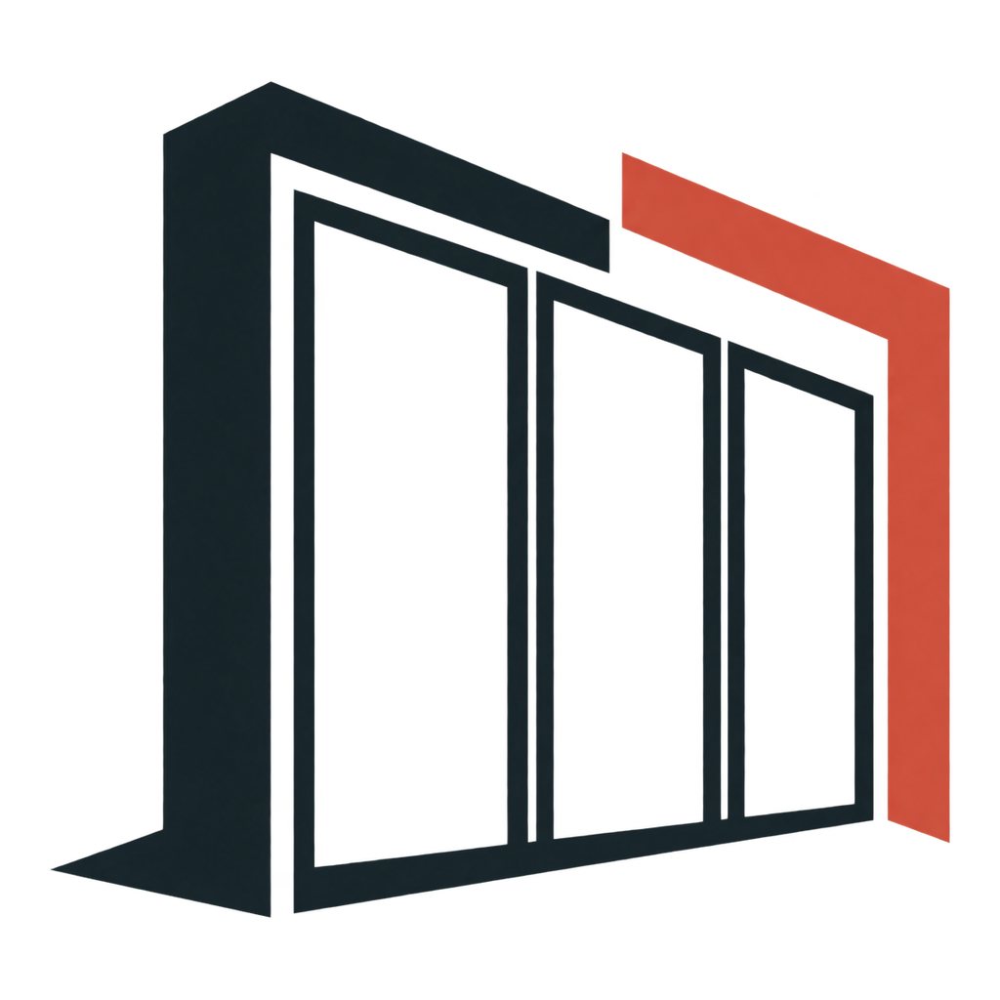
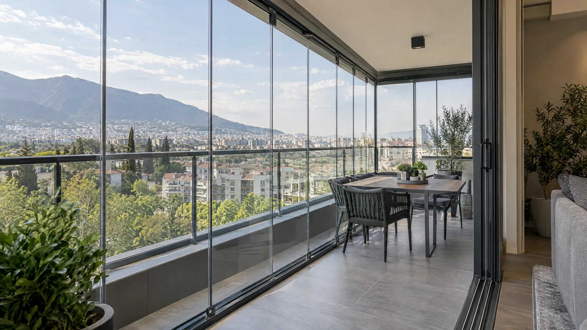
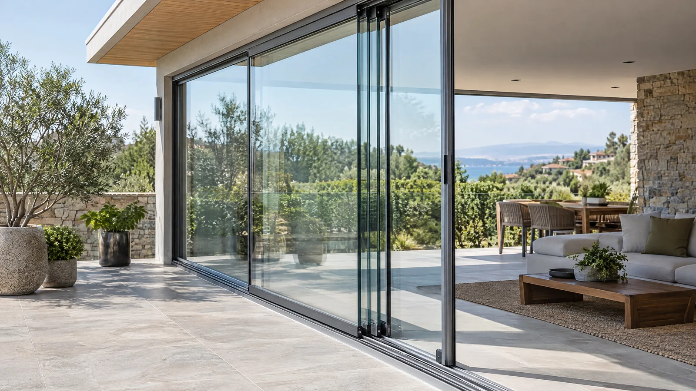
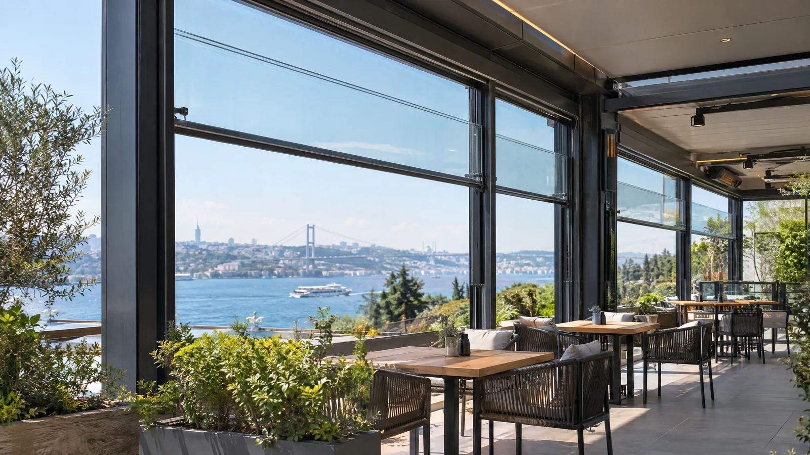
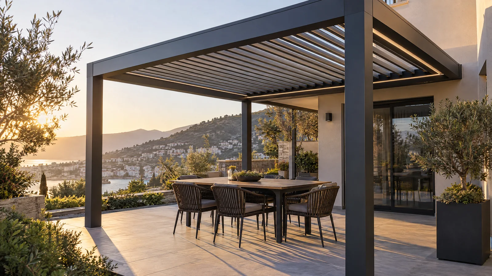
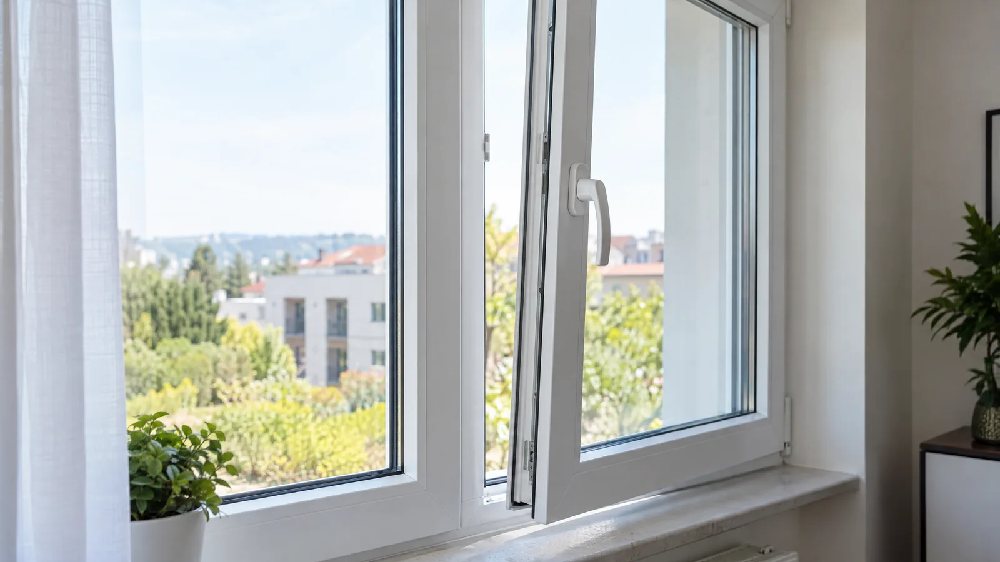
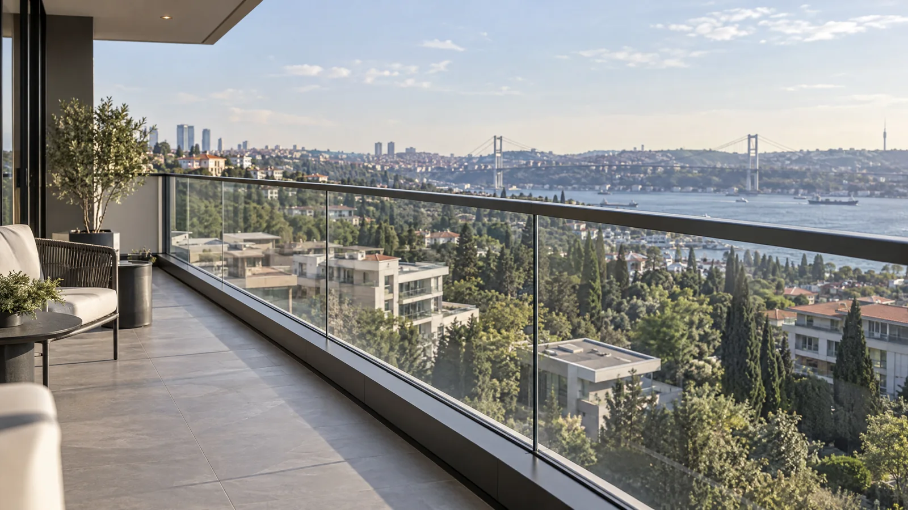
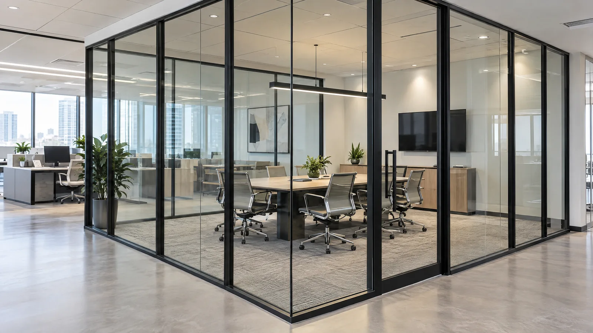
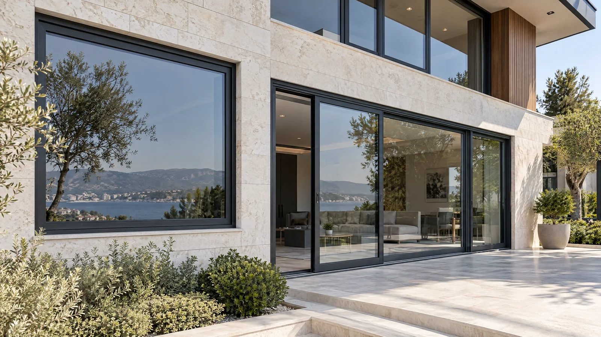

İhtiyaca uygun sistem
Cam balkon, sürme cam, giyotin, pergole, PVC, korkuluk, ofis bölme ve alüminyum doğrama seçeneklerini kullanım amacınıza göre birlikte değerlendiririz.

DC YAPICAM BALKONCAM BALKON · PERGOLE · GİYOTİN
Balkon ve teraslar için mekânınıza uygun cam sistemleri. İhtiyacınızı konuşalım, yerinde ölçelim, net bir teklif hazırlayalım.
Balkon, teras ya da işletmeniz için farklı kullanım biçimlerine ve mimari ihtiyaçlara göre seçenekler.









Her balkonun, terasın ve kullanım alışkanlığının farklı olduğunu biliyoruz. Bu nedenle sistem seçimini yalnızca görünüme göre değil; alanın ölçüsüne, açıklığına ve sizin beklentinize göre ele alıyoruz.
İlk görüşmeden montaj planına kadar süreci anlaşılır tutuyor, seçenekleri ve uygulama detaylarını birlikte değerlendiriyoruz.
Projenizi konuşalım →Cam balkon ve doğrama uygulamalarında her mekânın ihtiyacı farklıdır. Kararınızı kullanım amacı, ölçü ve uygulama kapsamını birlikte değerlendirerek vermenize yardımcı oluruz.
Cam balkon, sürme cam, giyotin, pergole, PVC, korkuluk, ofis bölme ve alüminyum doğrama seçeneklerini kullanım amacınıza göre birlikte değerlendiririz.
Balkon, teras ya da işletmenizin açıklıklarını ve mevcut yapı koşullarını inceleyerek uygun sistemi planlarız.
Sistem, cam ve profil tercihleriyle uygulama adımlarını anlaşılır biçimde paylaşır; teklif kapsamını birlikte netleştiririz.
Kararınız netleşince üretim ve montaj takvimini görüşür, sonraki adımları baştan paylaşırız.
Projeniz için ilk adımı birlikte atalım.
Keşif ve teklif isteyin →Projenizin her adımında ne olacağını bilmeniz için süreci baştan açıkça paylaşıyoruz.
Alanınızı ve beklentinizi konuşup ilk yönlendirmeyi yapalım.
Uygun sistemi belirlemek için mekânın ölçülerini ve koşullarını inceleyelim.
Malzeme ve uygulama seçeneklerini içeren anlaşılır bir teklif paylaşalım.
Onayınızla üretim ve montaj takvimini birlikte oluşturalım.
Uygulamalarımızdan ve tamamladığımız projelerden en yeni paylaşımlarımızı inceleyin.
Instagram gönderileri yükleniyor…
Gönderileri yana kaydırarak inceleyebilirsiniz.
İlk adım için ölçülerinizi girin veya bize ulaşın.
Sistem türü, ölçüler, cam ve profil tercihleri fiyatı etkiler. Başlangıç teklifinden sonra yerinde ölçüyle kesinleştirilir.
Keşif bölgesi ve uygun zaman için iletişim bilgilerinizi paylaşarak talep oluşturabilirsiniz.
Cam balkon, ısıcamlı sistemler, sürme ve giyotin cam seçenekleri mekânın koşullarına göre değerlendirilir.
Ölçü ve sistem seçimi netleştikten sonra uygulama takvimi karşılıklı olarak belirlenir.